[Image courtesy jschild].
I like using Debian's minimal mini.iso installer to create console-only base configurations that can be customized for various tasks and alternate desktops.
Let's go!
Debian GNU/Linux is an operating system created by volunteers of one of the largest and longest-running free software projects in the world. More than a hundred other Linux distributions like Ubuntu build their distributions on a solid Debian foundation.
There are 3 release branches: jessie/stable, stretch/testing, and sid/unstable. Below is a visual walk-through of a sample Debian stable setup that makes use of an entire storage device divided into 3 partitions: a root partition, and LUKS encrypted swap + home partitions.
0. Prepare install media
Download the 64-bit mini.iso (32bit for older machines) and flash the image to a USB stick. [1]
Minimal installer (requires network connection) downloads all the latest packages during setup.
1. Launch


 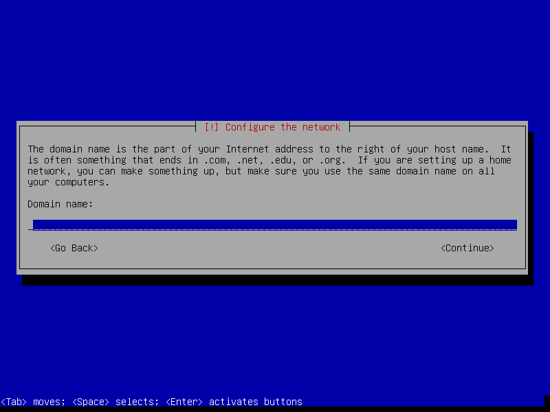
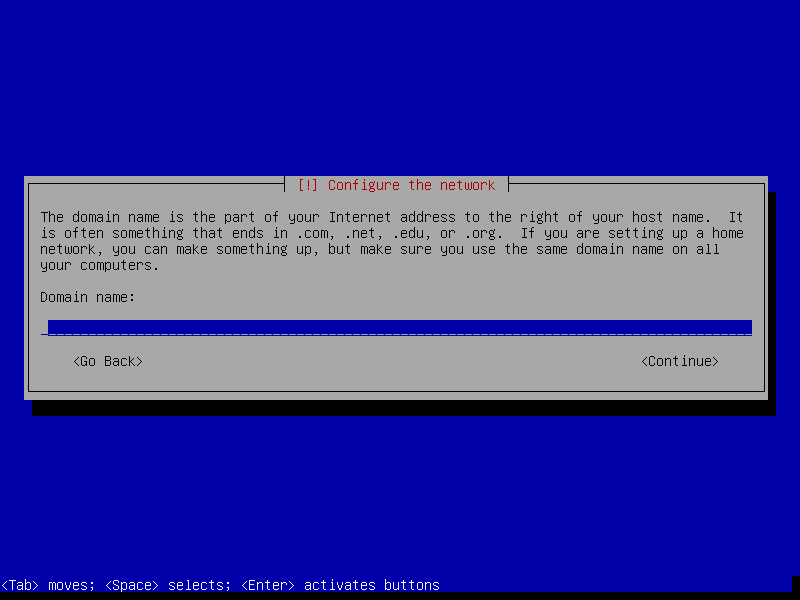
 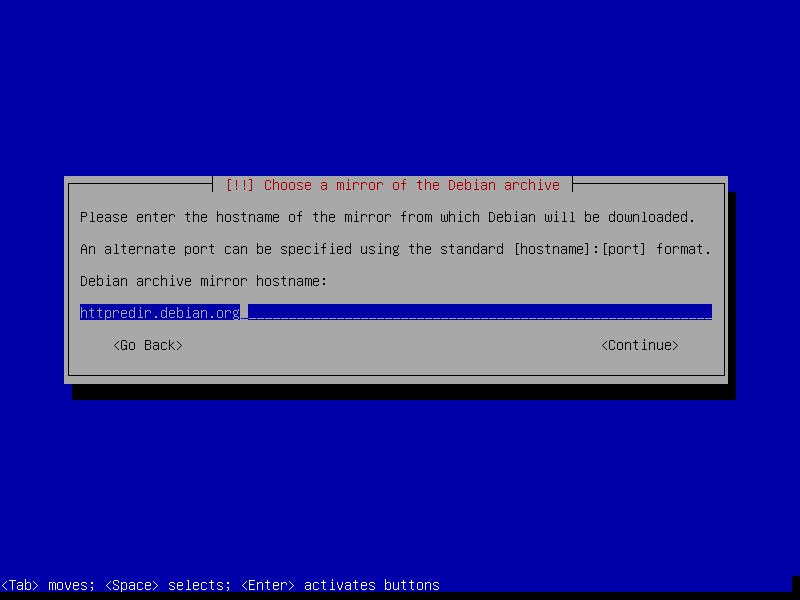
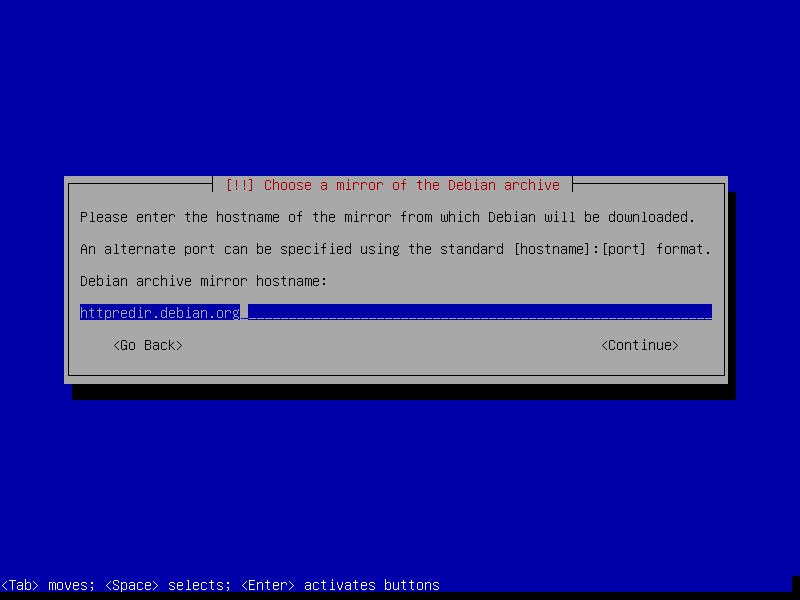
 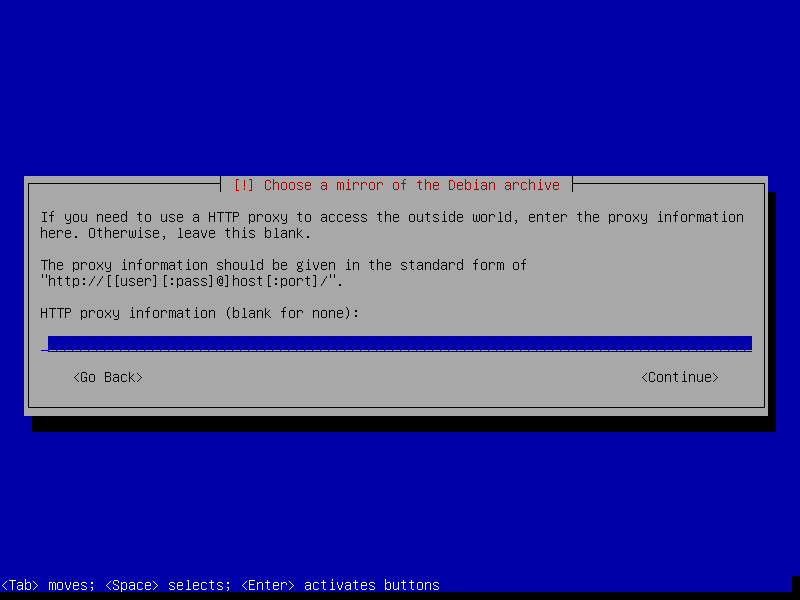
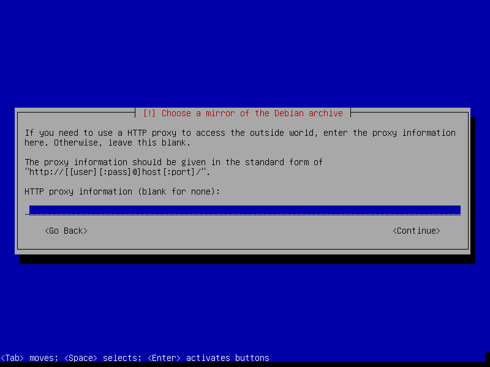
Contents of the installer are now loaded into memory and the USB stick can safely be removed. [2]


2. Partitions
In the example below I create 3 partitions [3] on the disk:
- sda1 is a 20GB root partition
- sda5 is a 1GB LUKS encrypted swap partition using a random key
- sda6 uses the remaining storage as a LUKS encrypted home partition using a passphrase
 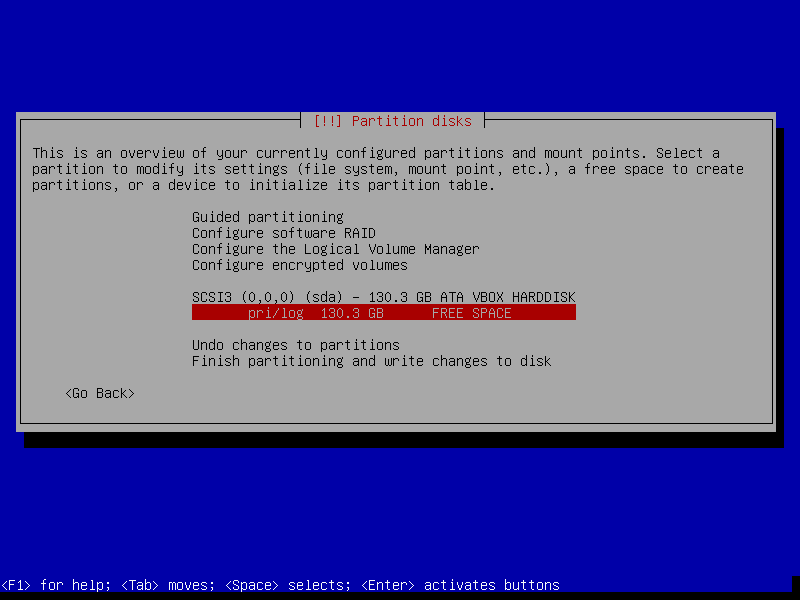
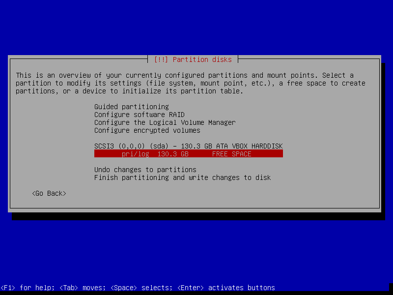


Setting Mount options: relatime decreases write operations and boosts drive speed ...
 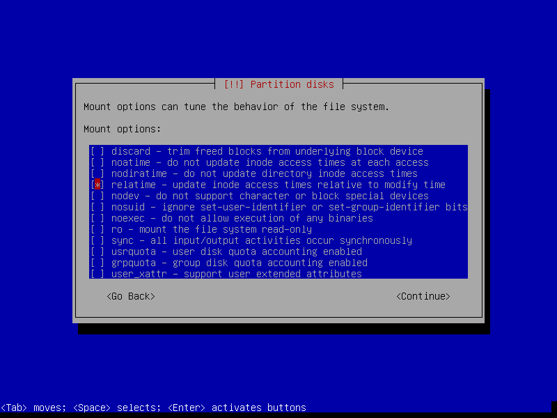
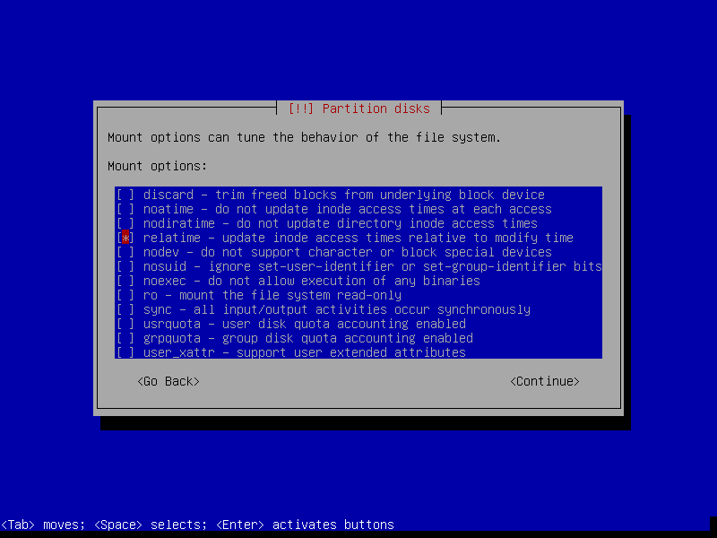


If the hard disk has not been securely wiped prior to installing Debian (using a utility like DBAN) you may want to configure Erase data: yes. Note, however, depending on the size of the disk this operation can last several hours.


Reserved blocks can be used by privileged system processes to write to disk - useful if a full filesystem blocks users from writing - and reduce disk fragmentation. On large, non-root partitions extra space can be gained by reducing the default 5% reserve set aside by Debian to 1% ...


3. Install packages and finish up

Select only [*] standard system utilities if you wish to start with a minimal, console-only base configuration ready for further customization. [4]
Packages are downloaded and the installer makes its finishing touches ...


4. First boot
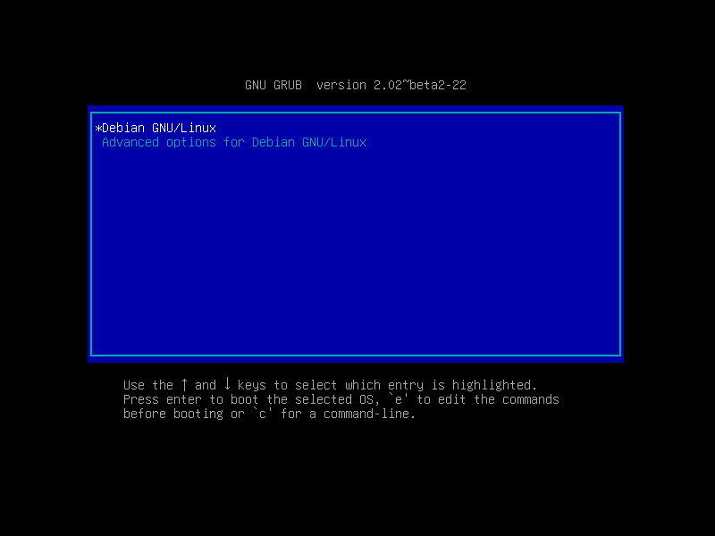System will display a passphrase prompt to unlock encrypted home partition ...
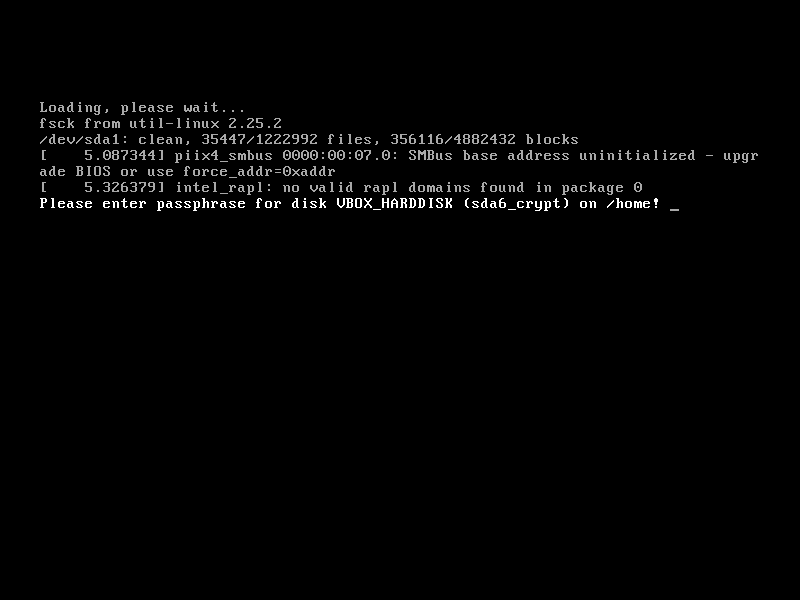
Login as root ... then run timedatectl to confirm system time+date is properly set.
5. Network
Check which network interfaces are detected and settings ...
# ip a
Wired interfaces are usually auto-configured by default and assigned an IP address courtesy of DHCP.
To assign a static address, deactivate the wired interface and create a new entry in /etc/network/interfaces. Sample entry for enp3s0 ...
# The primary network interface
auto enp3s0
#iface enp3s0 inet dhcp
iface enp3s0 inet static
address 192.168.1.88
netmask 255.255.255.0
gateway 192.168.1.1
dns-nameservers 192.168.1.1
Bring up|down interface with if{up,down} enp3s0.
Create a temporary wireless interface connection to WPA2 encrypted access points manually using wpa_supplicant + wpa_passphrase + dhclinet. Sample setup of wlp1s0 ...
# ip link set wlp1s0 up # bring up interface
# iw dev wlp1s0 link # get link status
# iw dev wlp1s0 scan | grep SSID # scan for access points
# wpa_supplicant -i wlp1s0 -c<(wpa_passphrase "MY_SSID" "MY_PASSPHRASE") # connect to WPA/WPA2 ... add '-B' to background process
# dhclient wlp1s0 # obtain IP address
More permanent configurations may be set in interfaces. Sample setup [5] with a static IP address ...
iface wlp1s0 inet static
address 192.168.1.77
netmask 255.255.255.0
gateway 192.168.1.1
wpa-ssid MY_SSID
wpa-psk MY_PASSPHRASE
dns-nameservers 8.8.8.8 8.8.4.4
Alternative setup using DHCP ...
allow-hotplug wlp1s0
iface wlp1s0 inet dhcp
wpa-ssid MY_SSID
wpa-psk MY_PASSPHRASE
dns-nameservers 8.8.8.8 8.8.4.4
Once a link is established an optional network manager utility may be installed. Packages network-manager and network-manager-gnome provide the console nmcli and graphical nm-applet clients respectively ...
# apt install network-manager
Comment out (deactivate) any entries in interfaces that will be managed by network-manager.
6. Where to go next ...
... is up to YOU. Yeehaw.
Happy hacking!
Notes
| [1] | An alternative is adding the image to a USB stick with multiple Linux installers. |
| [2] | Recommended: Otherwise the partitioning tool may designate the USB device as primary (sda) storage. |
| [3] | For storage devices >=128GB I create separate root + swap + home partitions. Smaller devices get boot + swap + root partitions and remember that encrypted root requires an unencrypted boot. |
| [4] | The task selection menu can be used post-install by running (as root) tasksel. |
| [5] | Multiple wireless static IP address setups can be created with iface wlp1s0_NAME inet static and [de]activated with if{up.down} wlp1s0=wlp1s0_NAME. |